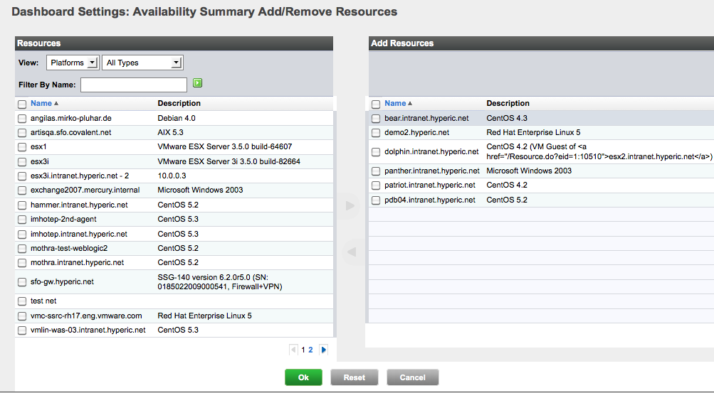

vFabric Hyperic 4.6.6 : ui-Dashboard.Availability
This page last changed on Jan 04, 2012 by mmcgarry.
Topics marked with * relate to features available only in vFabric Hyperic.
| Learn About Availability Metric |
For information about values of the availability metric, see Metrics and Metric Collection.
About the Availability Summary Portlet
The Availability Summary portlet presents the availability of selected resources by resource type. The portlet is empty until you configure the resources to include.
In the screenshot below, the portlet summarizes the available of 6 resources - five Linux platforms and one Win32 platform:
- One Linux platform is unavailable, the other four are available.
- The Win32 platform is available

Configure the Availability Summary Portlet
- Click the gear icon in the upper right corner of the Availability Summary portlet.
- The HQ Dashboard Settings: Availability Summary page appears.

- In the Description field, enter the title to appear at the top of the portlet.
- In the Display Range pulldown, select the maximum number of resource types to list in the portlet.
- If the Selected Resources section contains resources that you do not want to be included in the availability summary, checkmark them and click Remove From List.
- To add resources to the portlet:
- Click Add to List.
- The Dashboard Settings: Availability Summary Add/Remove Resources page appears.
 - In the Resources column:
- Use the View filters to filter by inventory type, resource type, or both, as desired.
- Enter a substring in the Filter by Name field to filter by resource name, as desired.
- In the list of resources, checkmark desired resources, and click the right arrow between the columns to include them in the availability summary.
- If the Add Resources column contains resources you don not wish to include in the availability summary, checkmark those resources and click the left arrow between the panels
- Click OK.
{kind=link}
{kind=link}
{kind=link}